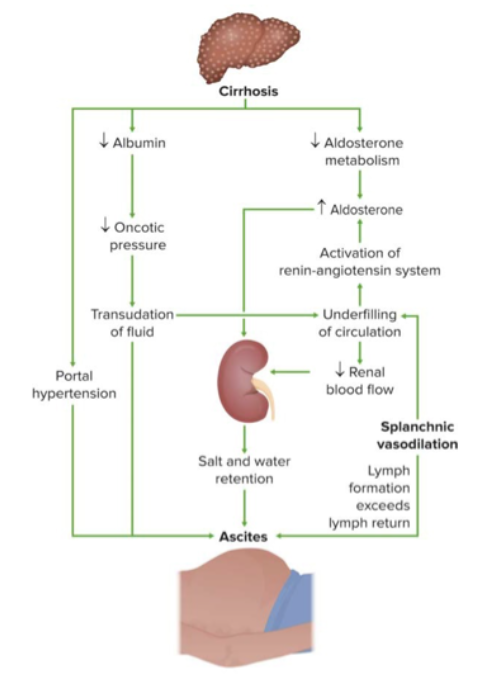
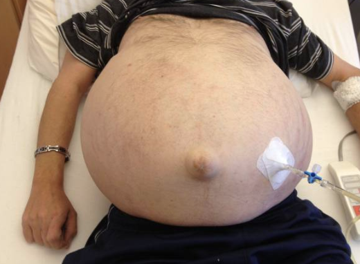
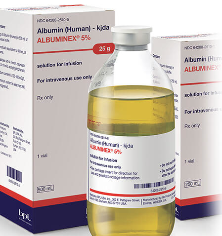

PRIMARY PERITONITIS (SPONTANEOUS BACTERIAL PERITONITIS)
Etiology
Primary peritonitis (spontaneous bacterial peritonitis, SBP) represents infection of the peritoneal cavity without an evident intraabdominal source. It occurs in patients with predisposing conditions that result in ascites:
- Cirrhosis and portal hypertension: The most common predisposing condition (prevalence 10-30% in hospitalized cirrhotic patients with ascites) (Biggins S, 2021; Conn HO, 1971)
- Cirrhosis type: Alcoholic cirrhosis, postnecrotic cirrhosis, chronic active hepatitis, acute viral hepatitis
- Other conditions: Congestive heart failure, metastatic malignancy, systemic lupus erythematosus, nephrotic syndrome, lymphedema, or rarely no underlying disease
- Risk factors for SBP in cirrhotic patients:
- High-volume ascites (advanced cirrhosis, MELD >9)
- Concurrent gastrointestinal hemorrhage
- Prior episode of primary peritonitis
- Low ascitic protein (<1 g/dL)
- Elevated serum bilirubin (>2.5 mg/dL)
- Proton pump inhibitor use (Dahabra L, 2022; Min YW, 2014)

The common pathogenic link is the presence of ascites, likely due to impaired reticuloendothelial clearance of bacteria and reduced opsonic activity in ascitic fluid (Simberkoff MS, 1978).
Bacteriologic Characteristics
Primary peritonitis is characteristically a monomicrobial infection, with microorganisms of presumed enteric origin:
- Most common pathogens: E. coli (most frequent), Klebsiella pneumoniae, other Enterobacterales, Streptococcus pneumoniae, and other streptococcal species
- Percentage distribution (in cirrhotic patients):
- Gram-negative enteric bacteria: 69%
- Streptococcus species: 15%
- Staphylococcus aureus: 2-4% (unusual; may occur with umbilical hernia erosion)
- Rare pathogens: Pseudomonas aeruginosa, fungi, anaerobes (less than 1%)
Variants of Primary Peritonitis
Three distinct variants have been described:
- Monomicrobial nonneutrocytic bacterascites: Positive cultures but <250 neutrophils/mm³; may represent early bacterial colonization; 62-86% resolve spontaneously, remainder progress to SBP
- Culture-negative neutrocytic ascites: >250 neutrophils/mm³ with negative cultures (in absence of prior antibiotics); occurs in 35% of clinically suspected SBP; blood cultures positive in one-third of cases (Runyon BA, 1984)
- Polymicrobial bacterascites: Due to traumatic paracentesis (Runyon BA, 1986) with bowel entry (<1% of procedures); transient in most cases if protein >1 g/dL and opsonic activity adequate
Diagnostic Pearl: The finding of >250 neutrophils/mm³ in peritoneal fluid warrants empirical antibiotic therapy even with negative cultures if SBP is clinically suspected, as blood cultures are positive in one-third of culture-negative cases.
Pathogenesis
The route of infection in primary peritonitis is typically not apparent, but several mechanisms have been proposed:
Routes of Bacterial Entry
- Hematogenous/lymphogenous: Bacteria from intestinal translocation enter portal circulation; hepatic reticuloendothelial system is primary site for clearance
- Transmural migration: Enteric bacteria traverse intact bowel wall (demonstrated with hypertonic peritoneal solutions in animal models)
- Vaginal ascension: Transfallopian spread in prepubertal females; associated with intrauterine devices
- Distant foci: Hematogenous seeding from skin, soft tissues, urinary tract, respiratory tract, or odontogenic infections
Host Factors Facilitating Infection
- Impaired reticuloendothelial clearance: Cirrhosis is associated with impaired hepatic bacterial clearance
- Reduced opsonization: Low complement and immunoglobulin levels in ascitic fluid, particularly in cirrhosis and nephrotic syndrome
- Impaired phagocytosis: Alcohol abuse and cirrhosis cause reduced intracellular killing by monocytes and neutrophils
- Intestinal bacterial overgrowth: Proton pump inhibitors may increase bacterial overgrowth and translocation risk
- Portosystemic shunts: Allow portal blood to bypass hepatic filtering
Clinical Manifestations
Primary peritonitis often presents insidiously in cirrhotic patients with minimal or nonspecific symptoms:
Symptoms
- Abdominal pain (often mild or absent)
- Fever (variable, may be absent)
- Change in mental status (hepatic encephalopathy)
- Malaise, fatigue
- Nausea and vomiting
Clinical Pearl: Primary peritonitis may present with only fever and a decline in mental status without marked peritoneal signs; a low threshold for paracentesis is essential in cirrhotic patients with ascites.
Physical Findings
- Mild abdominal tenderness (may be absent)
- Decreased rebound tenderness compared to secondary peritonitis
- Absence of classic peritoneal signs in many cases
- Jaundice and stigmata of cirrhosis
Laboratory Findings
Peritoneal Fluid Analysis
- WBC count: ≥250 cells/mm³ (predominantly PMN); cultures positive in 40-60% of cases
- Protein concentration: Usually reflects serum levels (low in cirrhotic patients)
- Gram stain: Positive in only 10-15% of cases
- Culture: Positive in 40-60%; single organism in >95%
- Blood cultures: Positive in 75% of patients with aerobic bacterial peritonitis
Diagnostic Technique: Inoculation of blood culture bottles with 10-20 mL of ascitic fluid at bedside improves culture yield, particularly for fastidious organisms.

Additional Studies
- Serum-ascitic albumin gradient >1.1 g/dL: Suggests portal hypertension (not peritonitis)
- Ascitic glucose: May be low in secondary peritonitis or tuberculous peritonitis
- Ascitic amylase and LDH: May help distinguish primary from secondary peritonitis
- Blood chemistry: Assess renal function (creatinine), liver function (bilirubin, INR)
Diagnosis
Primary peritonitis is diagnosed by:
- Clinical suspicion in patient with ascites and signs of infection
- Paracentesis with ascitic fluid cell count ≥250 PMN/mm³
- Exclusion of a primary intraabdominal source of infection (clinical exam, imaging if needed)
- Positive ascitic fluid or blood culture
Diagnostic Criteria for SBP: - Ascitic fluid PMN count ≥250 cells/mm³ - Positive ascitic or blood culture with single organism - No evidence of secondary peritonitis (perforation, pancreatitis, etc.)
Prognosis
Prognosis in primary peritonitis is significantly influenced by the presence of complications:
- Mortality: Historically 30-40% in hospitalized patients; improved with early diagnosis and therapy
- Renal failure: Develops in 30-40% of patients and is the major cause of death
- Recurrence: 69% at 1 year if prophylaxis not given after first episode
- Albumin administration: Meta-analysis of four controlled trials demonstrated significant mortality reduction (16% vs 35%) and reduction in acute kidney injury (8% vs 31%) when albumin given with antibiotics
Therapy
Antimicrobial Therapy
Empirical therapy should be initiated immediately after paracentesis upon clinical suspicion:
Indications for Initiation of Antimicrobial Therapy: - Temperature >37.8°C (100°F) - Abdominal pain and/or tenderness - Unexplained change in mental status - Laboratory abnormalities (renal failure, acidosis, peripheral leukocytosis) - Ascitic fluid PMN count ≥250 cells/mm³
First-Line Regimens
| Organism | Preferred Agent |
|---|---|
| S. pneumoniae or Group A streptococci | High-dose penicillin, ceftriaxone, or cefotaxime |
| Penicillin-resistant pneumococci | Vancomycin ± fluoroquinolone |
| Methicillin-sensitive S. aureus | Nafcillin or first-generation cephalosporin (cefazolin) |
| Methicillin-resistant S. aureus | Vancomycin, daptomycin, telavancin, or linezolid |
| P. aeruginosa | Antipseudomonal penicillin, ceftazidime, cefepime, carbapenem ± aminoglycoside or fluoroquinolone |
| ESBL-producing gram-negative bacilli | Carbapenem (preferred) |
Duration and Route of Therapy
- Duration: 5-7 days is standard for most cases
- Transition to oral: After 48 hours of intravenous therapy if clinical improvement demonstrated and effective oral agent available
- Clinical improvement: ≥25% decline in ascitic PMN count at 24-48 hours indicates adequate therapy
- Repeat paracentesis: Consider if:
- Unusual organism isolated
- Lack of expected clinical response
- Elevated PMN count on follow-up
Albumin Administration
Albumin is indicated to prevent renal insufficiency and reduce mortality:
- Dosing: 1.5 g/kg IV within 6 hours of diagnosis, then 1 g/kg on day 3
- Indications:
- Ascitic fluid PMN ≥250 cells/mm³
- Serum creatinine >1 mg/dL, BUN >30 mg/dL, or total bilirubin >4 mg/dL
- Mechanism: Maintains effective arterial blood volume and prevents acute kidney injury
- Evidence: Reduces mortality from 35% to 16% and acute kidney injury from 31% to 8%

Vasopressor Consideration
- Beta-blockers associated with increased mortality in SBP; should be discontinued in hypotensive or hyponatremic patients
Prevention
Prophylaxis Reduces Mortality: Antibiotic prophylaxis has been proven in randomized controlled trials to decrease infection episodes and lower mortality in high-risk patients.
Short-Term Prophylaxis (Acute Gastrointestinal Bleeding)
- Agent: Intravenous ceftriaxone 1 g daily
- Duration: 7 days inpatient
- Transition: Change to oral double-strength trimethoprim-sulfamethoxazole, ciprofloxacin 500 mg twice daily, or norfloxacin 400 mg twice daily once bleeding cessation and clinical stability achieved
Long-Term Prophylaxis
| Indication | Preferred Agents |
|---|---|
| Prior episode of SBP | Ciprofloxacin 500 mg daily, norfloxacin 400 mg daily, or double-strength TMP-SMX daily |
| Ascitic protein <1.5 g/dL AND one of: | Same as above |
| - Serum creatinine ≥1.2 mg/dL | |
| - BUN ≥25 mg/dL | |
| - Serum sodium ≤130 mEq/L | |
| - Hepatic failure (MELD ≥9, bilirubin ≥3 mg/dL) | |
| High-risk GI bleeding | Ciprofloxacin or norfloxacin |
Alternative Agent: Rifaximin has been shown effective in reducing SBP occurrence, though routine use data are insufficient at present.